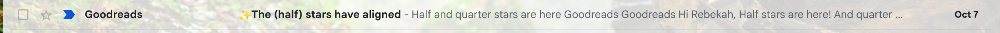

There I was...emptying out my email when I got an email from goodreads!

Half stars and quarter stars are IN!!!
This is pretty incredible and goodreads said it was their most requested feature.
One of the slight irritation of life (previously) was finishing a book on goodreads, going to rate it and deciding whether it should get 3 stars or 4... "Should I give it three?" "But rounding down is pretty rough...it's only like a 3.5" "4 is definitely too much" etcetera.
I am incredibly grateful for this update!